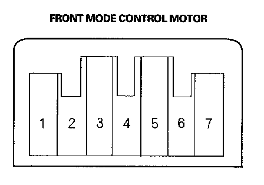

Front Mode Control Motor Test
Front Mode Control Motor TestNOTE: Before testing, check for HVAC DTCs.
1. Disconnect the 7P connector from the front mode control motor.
NOTE: Incorrectly applying power and ground to the front mode control motor will damage it. Follow the instructions carefully.

2. Connect battery power to the No. 1 terminal of the front mode control motor, and ground the No. 2 terminal; the front mode control motor should run smoothly, and stop at Vent. If it doesn't, reverse the connections; the front mode control motor should run smoothly, and stop at Defrost. When the front mode control motor stops running, disconnect battery power immediately.
3. If the front mode control motor did not run in step 2, remove it, then check the front mode control linkage and doors for smooth movement.
- If the linkage and doors move smoothly, replace the front mode control motor.
- If the linkage or doors stick or bind, repair them as needed.
- If the front mode control motor runs smoothly, go to step 4.
4. Use a digital multimeter with an output of 1 mA or less at the 20 kohms range. With the front mode control motor running as in step 2, check for continuity between the No. 3, 4, 5, and 6 terminals and the No. 7 terminal individually. There should be continuity for a moment at each terminal as the motor moves past the switch's terminal.
5. If there is no continuity for a moment at each terminal, replace the front mode control motor.